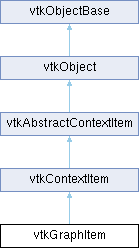

|
Etrek
|
|
Etrek
|
A 2D graphics item for rendering a graph. More...
#include <vtkGraphItem.h>

Public Member Functions | |
| vtkTypeMacro (vtkGraphItem, vtkContextItem) | |
| void | PrintSelf (ostream &os, vtkIndent indent) override |
| virtual vtkIncrementalForceLayout * | GetLayout () |
| virtual void | UpdateLayout () |
| virtual void | SetGraph (vtkGraph *graph) |
| vtkGetObjectMacro (Graph, vtkGraph) | |
| virtual void | StartLayoutAnimation (vtkRenderWindowInteractor *interactor) |
| virtual void | StopLayoutAnimation () |
| Public Member Functions inherited from vtkContextItem | |
| vtkTypeMacro (vtkContextItem, vtkAbstractContextItem) | |
| virtual void | SetTransform (vtkContextTransform *) |
| vtkGetMacro (Opacity, double) | |
| vtkSetMacro (Opacity, double) | |
| Public Member Functions inherited from vtkAbstractContextItem | |
| vtkTypeMacro (vtkAbstractContextItem, vtkObject) | |
| virtual void | Update () |
| virtual bool | PaintChildren (vtkContext2D *painter) |
| virtual void | ReleaseGraphicsResources () |
| vtkIdType | AddItem (vtkAbstractContextItem *item) |
| bool | RemoveItem (vtkAbstractContextItem *item) |
| bool | RemoveItem (vtkIdType index) |
| vtkAbstractContextItem * | GetItem (vtkIdType index) |
| vtkIdType | GetItemIndex (vtkAbstractContextItem *item) |
| vtkIdType | GetNumberOfItems () VTK_FUTURE_CONST |
| void | ClearItems () |
| vtkIdType | Raise (vtkIdType index) |
| virtual vtkIdType | StackAbove (vtkIdType index, vtkIdType under) |
| vtkIdType | Lower (vtkIdType index) |
| virtual vtkIdType | StackUnder (vtkIdType child, vtkIdType above) |
| virtual vtkAbstractContextItem * | GetPickedItem (const vtkContextMouseEvent &mouse) |
| virtual bool | MouseDoubleClickEvent (const vtkContextMouseEvent &mouse) |
| virtual bool | KeyPressEvent (const vtkContextKeyEvent &key) |
| virtual bool | KeyReleaseEvent (const vtkContextKeyEvent &key) |
| virtual void | SetScene (vtkContextScene *scene) |
| vtkContextScene * | GetScene () |
| virtual void | SetParent (vtkAbstractContextItem *parent) |
| vtkAbstractContextItem * | GetParent () |
| virtual vtkVector2f | MapToParent (const vtkVector2f &point) |
| virtual vtkVector2f | MapFromParent (const vtkVector2f &point) |
| virtual vtkVector2f | MapToScene (const vtkVector2f &point) |
| virtual vtkVector2f | MapFromScene (const vtkVector2f &point) |
| virtual bool | GetVisible () |
| vtkSetMacro (Visible, bool) | |
| vtkGetMacro (Interactive, bool) | |
| vtkSetMacro (Interactive, bool) | |
| Public Member Functions inherited from vtkObject | |
| vtkBaseTypeMacro (vtkObject, vtkObjectBase) | |
| virtual void | DebugOn () |
| virtual void | DebugOff () |
| bool | GetDebug () |
| void | SetDebug (bool debugFlag) |
| virtual void | Modified () |
| virtual vtkMTimeType | GetMTime () |
| void | PrintSelf (ostream &os, vtkIndent indent) override |
| void | RemoveObserver (unsigned long tag) |
| void | RemoveObservers (unsigned long event) |
| void | RemoveObservers (const char *event) |
| void | RemoveAllObservers () |
| vtkTypeBool | HasObserver (unsigned long event) |
| vtkTypeBool | HasObserver (const char *event) |
| vtkTypeBool | InvokeEvent (unsigned long event) |
| vtkTypeBool | InvokeEvent (const char *event) |
| std::string | GetObjectDescription () const override |
| unsigned long | AddObserver (unsigned long event, vtkCommand *, float priority=0.0f) |
| unsigned long | AddObserver (const char *event, vtkCommand *, float priority=0.0f) |
| vtkCommand * | GetCommand (unsigned long tag) |
| void | RemoveObserver (vtkCommand *) |
| void | RemoveObservers (unsigned long event, vtkCommand *) |
| void | RemoveObservers (const char *event, vtkCommand *) |
| vtkTypeBool | HasObserver (unsigned long event, vtkCommand *) |
| vtkTypeBool | HasObserver (const char *event, vtkCommand *) |
| template<class U, class T> | |
| unsigned long | AddObserver (unsigned long event, U observer, void(T::*callback)(), float priority=0.0f) |
| template<class U, class T> | |
| unsigned long | AddObserver (unsigned long event, U observer, void(T::*callback)(vtkObject *, unsigned long, void *), float priority=0.0f) |
| template<class U, class T> | |
| unsigned long | AddObserver (unsigned long event, U observer, bool(T::*callback)(vtkObject *, unsigned long, void *), float priority=0.0f) |
| vtkTypeBool | InvokeEvent (unsigned long event, void *callData) |
| vtkTypeBool | InvokeEvent (const char *event, void *callData) |
| virtual void | SetObjectName (const std::string &objectName) |
| virtual std::string | GetObjectName () const |
| Public Member Functions inherited from vtkObjectBase | |
| const char * | GetClassName () const |
| virtual vtkTypeBool | IsA (const char *name) |
| virtual vtkIdType | GetNumberOfGenerationsFromBase (const char *name) |
| virtual void | Delete () |
| virtual void | FastDelete () |
| void | InitializeObjectBase () |
| void | Print (ostream &os) |
| void | Register (vtkObjectBase *o) |
| virtual void | UnRegister (vtkObjectBase *o) |
| int | GetReferenceCount () |
| void | SetReferenceCount (int) |
| bool | GetIsInMemkind () const |
| virtual void | PrintHeader (ostream &os, vtkIndent indent) |
| virtual void | PrintTrailer (ostream &os, vtkIndent indent) |
| virtual bool | UsesGarbageCollector () const |
Static Public Member Functions | |
| static vtkGraphItem * | New () |
| Static Public Member Functions inherited from vtkObject | |
| static vtkObject * | New () |
| static void | BreakOnError () |
| static void | SetGlobalWarningDisplay (vtkTypeBool val) |
| static void | GlobalWarningDisplayOn () |
| static void | GlobalWarningDisplayOff () |
| static vtkTypeBool | GetGlobalWarningDisplay () |
| Static Public Member Functions inherited from vtkObjectBase | |
| static vtkTypeBool | IsTypeOf (const char *name) |
| static vtkIdType | GetNumberOfGenerationsFromBaseType (const char *name) |
| static vtkObjectBase * | New () |
| static void | SetMemkindDirectory (const char *directoryname) |
| static bool | GetUsingMemkind () |
Protected Member Functions | |
| bool | Paint (vtkContext2D *painter) override |
| virtual void | RebuildBuffers () |
| virtual void | PaintBuffers (vtkContext2D *painter) |
| virtual bool | IsDirty () |
| virtual vtkIdType | NumberOfVertices () |
| virtual vtkIdType | NumberOfEdges () |
| virtual vtkIdType | NumberOfEdgePoints (vtkIdType edge) |
| virtual float | EdgeWidth (vtkIdType edge, vtkIdType point) |
| virtual vtkColor4ub | EdgeColor (vtkIdType edge, vtkIdType point) |
| virtual vtkVector2f | EdgePosition (vtkIdType edge, vtkIdType point) |
| virtual float | VertexSize (vtkIdType vertex) |
| virtual vtkColor4ub | VertexColor (vtkIdType vertex) |
| virtual int | VertexMarker (vtkIdType vertex) |
| virtual vtkVector2f | VertexPosition (vtkIdType vertex) |
| virtual vtkStdString | VertexTooltip (vtkIdType vertex) |
| virtual vtkIdType | HitVertex (const vtkVector2f &pos) |
| bool | Hit (const vtkContextMouseEvent &event) override |
| virtual void | PlaceTooltip (vtkIdType v) |
| bool | MouseMoveEvent (const vtkContextMouseEvent &event) override |
| bool | MouseLeaveEvent (const vtkContextMouseEvent &event) override |
| bool | MouseEnterEvent (const vtkContextMouseEvent &event) override |
| bool | MouseButtonPressEvent (const vtkContextMouseEvent &event) override |
| bool | MouseButtonReleaseEvent (const vtkContextMouseEvent &event) override |
| bool | MouseWheelEvent (const vtkContextMouseEvent &event, int delta) override |
| Protected Member Functions inherited from vtkAbstractContextItem | |
| virtual void | ReleaseGraphicsCache () |
| Protected Member Functions inherited from vtkObject | |
| void | RegisterInternal (vtkObjectBase *, vtkTypeBool check) override |
| void | UnRegisterInternal (vtkObjectBase *, vtkTypeBool check) override |
| void | InternalGrabFocus (vtkCommand *mouseEvents, vtkCommand *keypressEvents=nullptr) |
| void | InternalReleaseFocus () |
| Protected Member Functions inherited from vtkObjectBase | |
| virtual void | ReportReferences (vtkGarbageCollector *) |
| vtkObjectBase (const vtkObjectBase &) | |
| void | operator= (const vtkObjectBase &) |
Static Protected Member Functions | |
| static void | ProcessEvents (vtkObject *caller, unsigned long event, void *clientData, void *callerData) |
| Static Protected Member Functions inherited from vtkObjectBase | |
| static vtkMallocingFunction | GetCurrentMallocFunction () |
| static vtkReallocingFunction | GetCurrentReallocFunction () |
| static vtkFreeingFunction | GetCurrentFreeFunction () |
| static vtkFreeingFunction | GetAlternateFreeFunction () |
Additional Inherited Members | |
| Protected Attributes inherited from vtkContextItem | |
| double | Opacity = 1.0 |
| vtkContextTransform * | Transform = nullptr |
| Protected Attributes inherited from vtkAbstractContextItem | |
| vtkContextScene * | Scene |
| vtkAbstractContextItem * | Parent |
| vtkContextScenePrivate * | Children |
| bool | Visible |
| bool | Interactive |
| Protected Attributes inherited from vtkObject | |
| bool | Debug |
| vtkTimeStamp | MTime |
| vtkSubjectHelper * | SubjectHelper |
| std::string | ObjectName |
| Protected Attributes inherited from vtkObjectBase | |
| std::atomic< int32_t > | ReferenceCount |
| vtkWeakPointerBase ** | WeakPointers |
A 2D graphics item for rendering a graph.
This item draws a graph as a part of a vtkContextScene. This simple class has minimal state and delegates the determination of visual vertex and edge properties like color, size, width, etc. to a set of virtual functions. To influence the rendering of the graph, subclass this item and override the property functions you wish to customize.
|
protectedvirtual |
Returns the edge color. Override in a subclass to change the edge color. Each edge control point may be rendered with a separate color with interpolation on line segments between points.
|
protectedvirtual |
Returns the edge control point positions. You generally do not need to override this method, instead change the edge control points on the underlying vtkGraph with SetEdgePoint(), AddEdgePoint(), etc., then call Modified() on the vtkGraph and re-render the scene.
|
protectedvirtual |
Returns the edge width. Override in a subclass to change the edge width. Note: The item currently supports one width per edge, queried on the first point.
|
virtual |
Exposes the incremental graph layout for updating parameters.
|
overrideprotectedvirtual |
Whether this graph item is hit.
Reimplemented from vtkAbstractContextItem.
|
protectedvirtual |
Return index of hit vertex, or -1 if no hit.
|
protectedvirtual |
Returns true if the underlying vtkGraph has been modified since the last RebuildBuffers, signaling a new RebuildBuffers is needed. When the graph was modified, it assumes the buffers will be rebuilt, so it updates the modified time of the last build. Override this function if you have a subclass that uses any information in addition to the vtkGraph to determine visual properties that may be dynamic.
|
overrideprotectedvirtual |
Mouse button down event Return true if the item holds the event, false if the event can be propagated to other items.
Reimplemented from vtkAbstractContextItem.
|
overrideprotectedvirtual |
Mouse button release event. Return true if the item holds the event, false if the event can be propagated to other items.
Reimplemented from vtkAbstractContextItem.
|
overrideprotectedvirtual |
Mouse enter event. Return true if the item holds the event, false if the event can be propagated to other items.
Reimplemented from vtkAbstractContextItem.
|
overrideprotectedvirtual |
Mouse leave event. Return true if the item holds the event, false if the event can be propagated to other items.
Reimplemented from vtkAbstractContextItem.
|
overrideprotectedvirtual |
Handle mouse events.
Reimplemented from vtkAbstractContextItem.
|
overrideprotectedvirtual |
Mouse wheel event, positive delta indicates forward movement of the wheel. Return true if the item holds the event, false if the event can be propagated to other items.
Reimplemented from vtkAbstractContextItem.
|
protectedvirtual |
Returns the number of edge control points for a particular edge. The implementation returns GetNumberOfEdgePoints(edge) + 2 for the specified edge to incorporate the source and target vertex positions as initial and final edge points.
|
protectedvirtual |
Returns the number of edges in the graph. Generally you do not need to override this method as it simply queries the underlying vtkGraph.
|
protectedvirtual |
Returns the number of vertices in the graph. Generally you do not need to override this method as it simply queries the underlying vtkGraph.
|
overrideprotectedvirtual |
Paints the graph. This method will call RebuildBuffers() if the graph is dirty, then call PaintBuffers().
Reimplemented from vtkAbstractContextItem.
|
protectedvirtual |
Efficiently draws the contents of the buffers built in RebuildBuffers. This occurs once per frame.
|
protectedvirtual |
Change the position of the tooltip based on the vertex hovered.
|
overridevirtual |
Methods invoked by print to print information about the object including superclasses. Typically not called by the user (use Print() instead) but used in the hierarchical print process to combine the output of several classes.
Reimplemented from vtkContextItem.
|
staticprotected |
Process events and dispatch to the appropriate member functions.
|
protectedvirtual |
Builds a cache of data from the graph by calling the virtual functions such as VertexColor(), EdgeColor(), etc. This will only get called when the item is dirty (i.e. IsDirty() returns true).
|
virtual |
Begins or ends the layout animation.
|
virtual |
Incrementally updates the graph layout.
|
protectedvirtual |
Returns the color of each vertex. Override in a subclass to change the graph vertex colors.
|
protectedvirtual |
Returns the marker type for each vertex, as defined in vtkMarkerUtilities. Override in a subclass to change the graph marker type. Note: The item currently supports one marker type for all vertices, queried on the first vertex.
|
protectedvirtual |
Returns the position of each vertex. You generally do not need to override this method. Instead, change the vertex positions with vtkGraph's SetPoint(), then call Modified() on the graph and re-render the scene.
|
protectedvirtual |
Returns the vertex size in pixels, which is remains the same at any zoom level. Override in a subclass to change the graph vertex size. Note: The item currently supports one size per graph, queried on the first vertex.
|
protectedvirtual |
Returns the tooltip for each vertex. Override in a subclass to change the tooltip text.